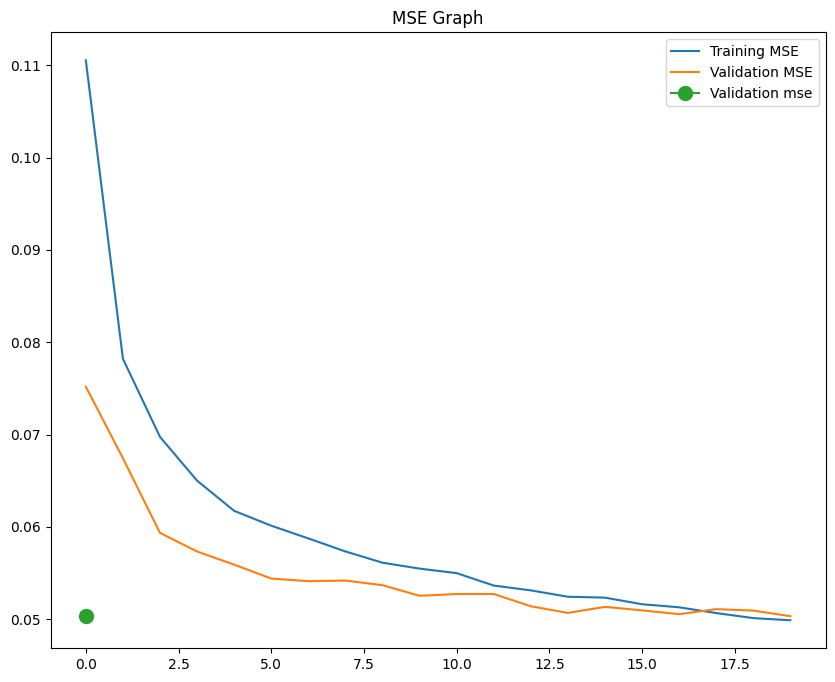
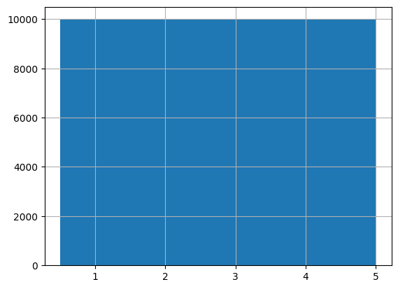

RESEARCH & EXPERIMENTAL
Hybrid Deep Collaborative Filtering
MovieLens Hybrid Neural Recommendation Engine
Scalable recommendation pipeline processing 33.8 million ratings across 86,500 movies. Combines content-based cosine similarity with a deep neural embedding architecture to overcome user cold-start and achieve 0.15 MSE validation error.
TensorFlow
Cosine Sim
Embedding Layers
Pandas / Polars
0.151
Validation MSE
33.8M
Raw Rating Records
86.5K
Indexed Movies
Hybrid
Filtering Engine
Convergence Analysis
Training Dynamics & Loss Minimization
Mean Squared Error (MSE) Curve
MSE: 0.151
Neural Collaborative Filtering converged steadily across 25 epochs with early stopping and dropout regularizers preventing overfitting on sparse user ratings.

Rating Distribution (Downsampled)
Stratified Split
Engineered an intelligent downsampling routine to retain long-tail user-item interactions while standardizing positive/negative rating distributions.
